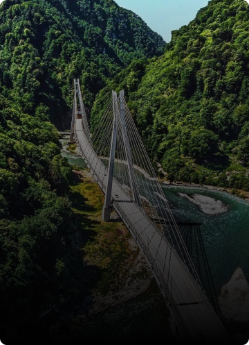
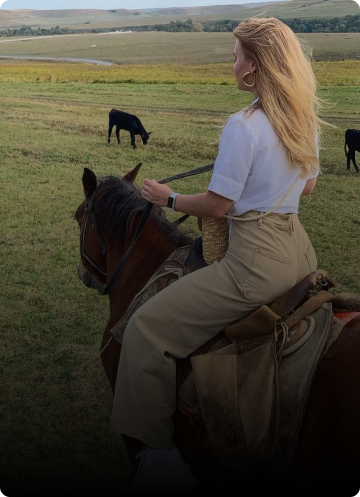
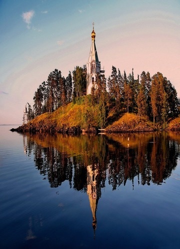

Популярные экскурсии



Автобусный тур
Обзорная по Сочи (из Адлера)
1ч 30мин
830₽
Приглашаем вас на экскурсию "Обзорная по Большому Сочи": Экскурсия начнется с подъёма на гору Большой Ахун - это высшая точка (665 метров) на побережьи Сочи. На вершине горы Большой Ахун есть смотровая башня, построенная в 1935-36 годах

Конный тур
Конные прогулки
1ч 50мин
1050₽
Конные прогулки проходят в Лазурной долине. С долины открывается красивый вид на море, горы и лес. На всем пути следования экскурсии вас будут сопровождать опытные инструктора. Катание на лошадях или иппотерапия очень полезна для детей и взрослых...

Квадротур
Пасть дракона
2ч 50мин
2000₽
Маршрут на Квадроциклах проходит по горной реке Мзымта вдоль белых скал и самшитовый лес к водопаду Глубокий Яр или "Пасть Дракона" (экскурсионное название). Высота водопада 41,5 метр - это один из самых высоких водопадов Большого Сочи...

Автобусный тур
Женский монастырь
4ч
618₽
Троице - Георгиевский женский монастырь расположен в селе Лесное в живописном месте, в котором гармонично сочетаются красота природы и красота архитектуры сотворенная руками человека. Это удивительное место расположено совсем недалеко от Чёрного моря - всего в 20 километрах
Автобусный тур
Обзорная по Сочи (из Адлера)
1ч 30мин
830₽
Приглашаем вас на экскурсию "Обзорная по Большому Сочи": Экскурсия начнется с подъёма на гору Большой Ахун - это высшая точка (665 метров) на побережьи Сочи. На вершине горы Большой Ахун есть смотровая башня, построенная в 1935-36 годах по проекту архитектора С. И. Воробьева...
Автобусный тур
Обзорная по Сочи (из Адлера)
1ч 30мин
830₽